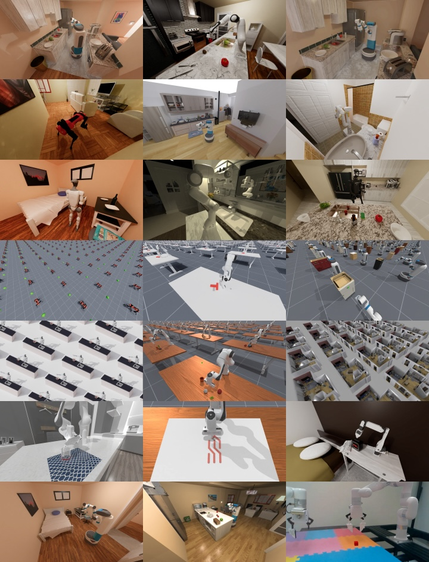
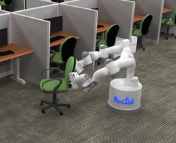
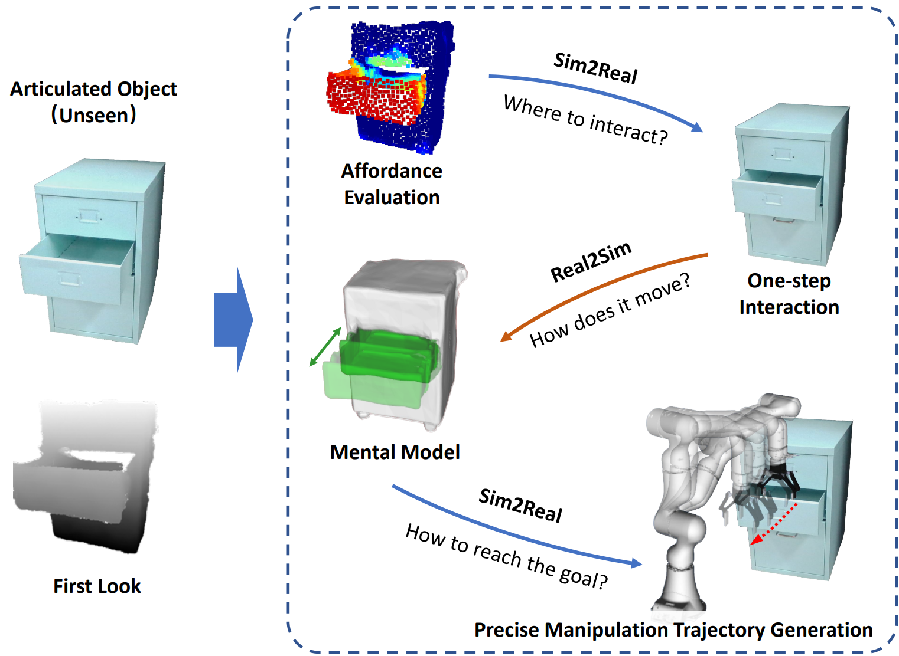
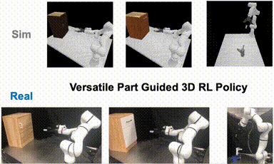
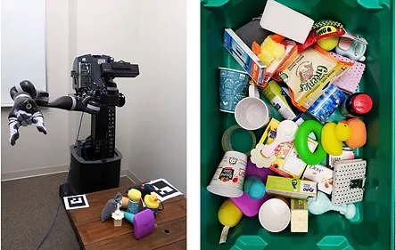
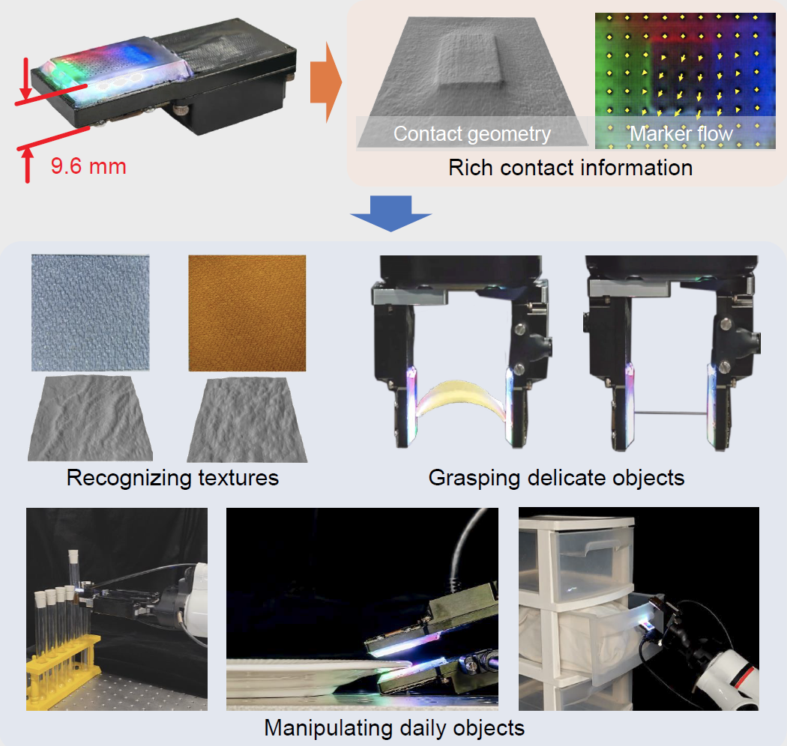
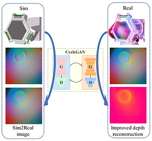
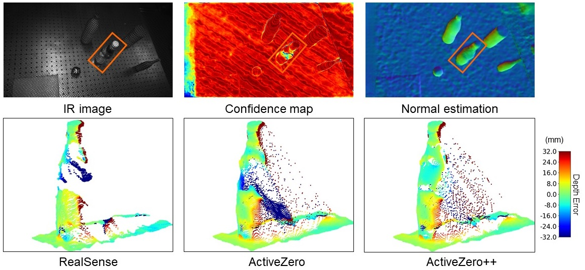
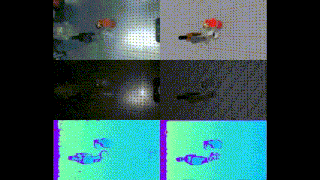
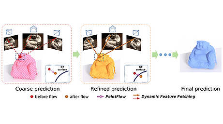

I am a Research Assistant Professor at Dept. of Mechanical Engineering, Tsinghua University. My goal is to empower robots to better perceive, understand and interact with the world. My current research includes robot learning, tactile sensing, and 3D computer vision.
I am actively looking for motivated visiting students, interns, and postdocs. Please feel free to email me if you are interested.
- 01/2025 ThinTact is accepted to TRO.
- 10/2024 The webpage of ManiSkill-ViTac Challenge 2025 is online! Please check here for more details.
- 03/2024 One paper accepted to CVPR 2024
- 01/2024 The ManiSkill-ViTac Challenge 2024 is released. Please check here for more details.
- 01/2024 Our paper ''General-Purpose Sim2Real Protocol for Learning Contact-Rich Manipulation With Marker-Based Visuotactile Sensors'' is accepted to TRO.
- ManiSkill-ViTac: Tactile-Vision Manipulation Skill Learning Challenge 2025
- ManiSkill-ViTac: Vision-based-Tactile Manipulation Skill Learning Challenge 2024
- ManiSkill2 Challenge
- ICRA 2024 Workshop on ''Robot Embodiment through Visuo-Tactile Perception''
- RSS 2023 Workshop on ''Interdisciplinary Exploration of Generalizable Manipulation Policy Learning: Paradigms and Debates''
- CVPR 2022 Tutorial: Building and Working in Environments for Embodied AI
-
[Robot Learning]
[Tactile Sensing]
[3D Vision]
*: equivalent contribution, †: corresponding author
-
DexSim2Real2:Building Explicit World Model for Precise Articulated Object Manipulations
 Taoran Jiang*, Liqian Ma*, Yixuan Guan, Jiaojiao Meng, Weihang Chen, Zecui Zeng, Lusong Li, Dan Wu, Jing Xu, Rui Chen†arXiv robot learningWe present DexSim2Real2, a novel robot learning framework for goal-conditioned articulated object manipulation using both two-finger grippers and multi-finger dexterous hands. The key of our framework is constructing an explicit world model of unseen articulated objects through active one-step interactions. This explicit world model enables sampling-based model predictive control to plan trajectories achieving different manipulation goals without needing human demonstrations or reinforcement learning. For dexterous multi-finger manipulation, we propose to utilize eigengrasp to reduce the high-dimensional action space, enabling more efficient trajectory searching. The robust generalizability of the explicit world model also enables advanced manipulation strategies, such as manipulating with different tools.
Taoran Jiang*, Liqian Ma*, Yixuan Guan, Jiaojiao Meng, Weihang Chen, Zecui Zeng, Lusong Li, Dan Wu, Jing Xu, Rui Chen†arXiv robot learningWe present DexSim2Real2, a novel robot learning framework for goal-conditioned articulated object manipulation using both two-finger grippers and multi-finger dexterous hands. The key of our framework is constructing an explicit world model of unseen articulated objects through active one-step interactions. This explicit world model enables sampling-based model predictive control to plan trajectories achieving different manipulation goals without needing human demonstrations or reinforcement learning. For dexterous multi-finger manipulation, we propose to utilize eigengrasp to reduce the high-dimensional action space, enabling more efficient trajectory searching. The robust generalizability of the explicit world model also enables advanced manipulation strategies, such as manipulating with different tools. -
ManiSkill3: GPU Parallelized Robotics Simulation and Rendering for Generalizable Embodied AIStone Tao, Fanbo Xiang, Arth Shukla, Yuzhe Qin, Xander Hinrichsen, Xiaodi Yuan, Chen Bao, Xinsong Lin, Yulin Liu, Tse-kai Chan, Yuan Gao, Xuanlin Li, Tongzhou Mu, Nan Xiao, Arnav Gurha, Zhiao Huang, Roberto Calandra, Rui Chen, Shan Luo, Hao SuarXiv robot learningManiSkill3 is an open-source, GPU-parallelized robotics simulator focusing on generalizable manipulation with contact-rich physics. It supports GPU parallelized simulation+rendering, heterogeneous simulation, and more via a simple object oriented API. ManiSkill3’s high-speed simulation and efficient rendering (30,000+ FPS), performs 10-1000x faster and uses 2-3x less GPU memory than competitors. The platform covers 12 diverse task domains including humanoids, mobile manipulation, and drawing. It provides realistic scenes and millions of demonstration frames. ManiSkill3 also includes comprehensive baselines for RL and learning-from-demonstrations algorithms.
-
ManiSkill2: A Unified Benchmark for Generalizable Manipulation SkillsJiayuan Gu, Fanbo Xiang, Xuanlin Li, Zhan Ling, Xiqiang Liu, Tongzhou Mu, Yihe Tang, Stone Tao, Xinyue Wei, Yunchao Yao, Xiaodi Yuan, Pengwei Xie, Zhiao Huang,Rui Chen, Hao SuICLR 2023 robot learningManiSkill2 is a unified benchmark for learning generalizable robotic manipulation skills powered by SAPIEN. It features 20 out-of-box task families with 2000+ diverse object models and 4M+ demonstration frames. Moreover, it empowers fast visual input learning algorithms so that a CNN-based policy can collect samples at about 2000 FPS with 1 GPU and 16 processes on a workstation. The benchmark can be used to study a wide range of algorithms: 2D & 3D vision-based reinforcement learning, imitation learning, sense-plan-act, etc.
-
Sim2Real2: Actively Building Explicit Physics Model for Precise Articulated Object ManipulationLiqian Ma, Jiaojiao Meng, Shuntao Liu, Weihang Chen, Jing Xu†, Rui Chen†ICRA 2023 robot learningWe present Sim2Real2 to enable the robot to manipulate an unseen articulated object to the desired state precisely in the real world with no human demonstrations. We leverage recent advances in physics simulation and learning-based perception to build the interactive explicit physics model of the object and use it to plan a long-horizon manipulation trajectory to accomplish the task.
-
Part-Guided 3D RL for Sim2Real Articulated Object ManipulationPengwei Xie*, Rui Chen*, Siang Chen*, Yuzhe Qin, Fanbo Xiang, Tianyu Sun, Jing Xu, Guijin Wang†, Hao SuRAL 2023 robot learningWe propose a novel part-guided 3D RL framework, which can learn to manipulate articulated objects without demonstrations. We combine the strengths of 2D segmentation and 3D RL to improve the efficiency of RL policy training. To improve the stability of the policy on real robots, we design a Frame-consistent Uncertainty-aware Sampling (FUS) strategy to get a condensed and hierarchical 3D representation. In addition, a single versatile RL policy can be trained on multiple articulated object manipulation tasks simultaneously in simulation and shows great generalizability to novel categories and instances.
-
S4G: Amodal Single-view Single-Shot SE(3) Grasp Detection in Cluttered ScenesYuzhe Qin*,Rui Chen*, Hao Zhu, Meng Song, Jing Xu, Hao SuCoRL 2019 robot learningWe studied the problem of 6-DoF grasping by a parallel gripper in a cluttered scene captured using a commodity depth sensor from a single view point. Our learning based approach trained in a synthetic scene can work well in real-world scenarios, with improved speed and success rate compared with state-of-the-arts.
-
ThinTact: Thin Vision-Based Tactile Sensor by Lensless ImagingJing Xu*, Weihang Chen*, Hongyu Qian, Dan Wu, Rui Chen†TRO 2025 tactile sensingWe propose ThinTact, a thin vision-based tactile sensor with a thickness of less than 10 mm. To overcome the thickness constraint of the lens system, we utilize the amplitude-mask-based lensless imaging technique to translate the contact information into CMOS signals. We first reconstruct a clear image from the CMOS signal, and then compute the contact geometry and marker displacements. The high sensitivity and thin profile of ThinTact enables many applications, including texture recognition, delicate object grasping and object manipulation.
-
General-Purpose Sim2Real Protocol for Learning Contact-Rich Manipulation With Marker-Based Visuotactile Sensors
 Weihang Chen*, Jing Xu*†, Fanbo Xiang, Xiaodi Yuan, Hao Su†,Rui Chen†TRO 2024 tactile sensingWe employ an FEM-based physics simulator that can simulate the sensor deformation accurately and stably for arbitrary geometries. We further propose a novel tactile feature extraction network that directly processes the set of pixel coordinates of tactile sensor markers and a self-supervised pretraining strategy to improve the efficiency and generalizability of RL policies. We conduct extensive Sim2Real experiments on the peg-in-hole task to validate the effectiveness of our method. And we further show its generalizability on additional tasks including plug adjustment and lock opening.
Weihang Chen*, Jing Xu*†, Fanbo Xiang, Xiaodi Yuan, Hao Su†,Rui Chen†TRO 2024 tactile sensingWe employ an FEM-based physics simulator that can simulate the sensor deformation accurately and stably for arbitrary geometries. We further propose a novel tactile feature extraction network that directly processes the set of pixel coordinates of tactile sensor markers and a self-supervised pretraining strategy to improve the efficiency and generalizability of RL policies. We conduct extensive Sim2Real experiments on the peg-in-hole task to validate the effectiveness of our method. And we further show its generalizability on additional tasks including plug adjustment and lock opening. -
Transtouch: Learning Transparent Object Depth Sensing Through Sparse Touches
 Liuyu Bian*, Pengyang Shi*, Weihang Chen, Jing Xu, Li Yi†, Rui Chen†IROS 2023 tactile sensingWe propose a method to finetune a stereo network with sparse depth labels automatically collected using a probing system with tactile feedback. We present a novel utility function to evaluate the benefit of touches. By approximating and optimizing the utility function, we can optimize the probing locations given a fixed touching budget to better improve the network's performance on real objects. We further combine tactile depth supervision with a confidence-based regularization to prevent over-fitting during finetuning.
Liuyu Bian*, Pengyang Shi*, Weihang Chen, Jing Xu, Li Yi†, Rui Chen†IROS 2023 tactile sensingWe propose a method to finetune a stereo network with sparse depth labels automatically collected using a probing system with tactile feedback. We present a novel utility function to evaluate the benefit of touches. By approximating and optimizing the utility function, we can optimize the probing locations given a fixed touching budget to better improve the network's performance on real objects. We further combine tactile depth supervision with a confidence-based regularization to prevent over-fitting during finetuning. -
Bidirectional Sim-to-Real Transfer for GelSight Tactile Sensors with CycleGANWeihang Chen*, Yuan Xu*, Zhenyang Chen*, Peiyu Zeng, Renjun Dang, Rui Chen, Jing Xu†RAL 2022 tactile sensingWe propose to narrow the gap between simulation and real world using CycleGAN. Due to the bidirectional generators of CycleGAN, the proposed method can not only generate more realistic simulated tactile images, but also improve the deformation measurement accuracy of real sensors by transferring them to simulation domain.
-
ActiveZero++: Mixed Domain Learning Stereo and Confidence-based Depth Completion with Zero AnnotationRui Chen, Isabella Liu, Edward Yang, Jianyu Tao, Xiaoshuai Zhang, Qing Ran, Zhu Liu, Jing Xu†, Hao SuTPAMI 2023 3d visionWe propose a new framework, ActiveZero++, which is a mixed domain learning solution for active stereovision systems that requires no real world depth annotation. In the simulation domain, we use a combination of supervised disparity loss and self-supervised loss on a shape primitives dataset. By contrast, in the real domain, we only use self-supervised loss on a dataset that is out-of-distribution from either training simulation data or test real data. To improve the robustness and accuracy of our reprojection loss in hard-to-perceive regions, our method introduces a novel self-supervised loss called temporal IR reprojection. Further, we propose the confidence-based depth completion module, which uses the confidence from the stereo network to identify and improve erroneous areas in depth prediction through depth-normal consistency.
-
Close the Optical Sensing Domain Gap by Physics-Grounded Active Stereo Sensor SimulationXiaoshuai Zhang*, Rui Chen*, Ang Li**, Fanbo Xiang**, Yuzhe Qin**, Jiayuan Gu**, Zhan Ling**, Minghua Liu**, Peiyu Zeng**, Songfang Han***, Zhiao Huang***, Tongzhou Mu***, Jing Xu†, Hao Su†TRO 2023 3d visionSAPIEN Realistic depth lowers the sim-to-real gap of simulated depth and real active stereovision depth sensors, by designing a fully physics-grounded pipeline. Perception and RL methods trained in simulation can transfer well to the real world without any fine-tuning. It can also estimate the algorithm performance in the real world, largely reducing human effort of algorithm evaluation.
-
Visibility-Aware Point-Based Multi-View Stereo NetworkRui Chen, Songfang Han, Jing Xu†, Hao SuTPAMI 2020 3d visionThis is an extension of our ICCV work (Point-based Multi-view Stereo Network). In this paper, we introduce visibility-aware multi-view feature aggregation modules to gather information from visible views only for better depth prediction accuracy.
-
Point-based Multi-View Stereo Network
Rui Chen*, Songfang Han*, Jing Xu, Hao SuICCV 2019 (Oral) 3d visionWe introduce Point-MVSNet, a novel point-based deep framework for multi-view stereo (MVS). Distinct from existing cost volume approaches, our method directly processes the target scene as point clouds. More specifically, our method predicts the depth in a coarse-to-fine manner. We first generate a coarse depth map, convert it into a point cloud and refine the point cloud iteratively by estimating the residual between the depth of the current iteration and that of the ground truth. Our network leverages 3D geometry priors and 2D texture information jointly and effectively by fusing them into a feature-augmented point cloud, and processes the point cloud to estimate the 3D flow for each point. This point-based architecture allows higher accuracy, more computational efficiency and more flexibility than cost-volume-based counterparts.
Please refer to Google Scholar for the full publication list.
- 北京市科协青年人才托举工程 2024
-
博士后创新人才支持计划 2021
- 清华大学''水木学者''计划 2020